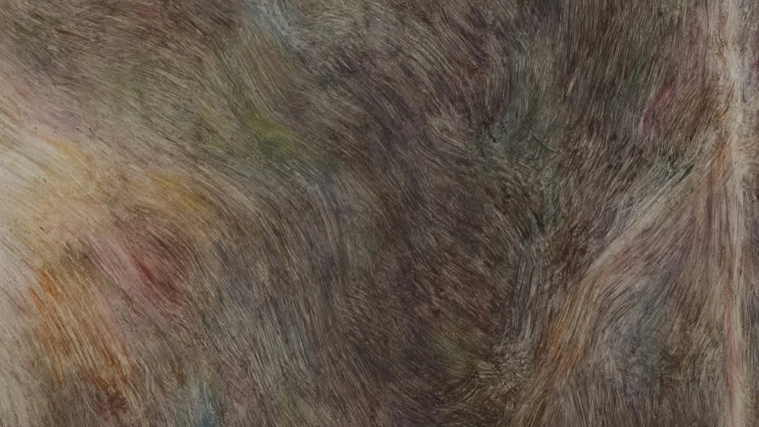

Jump to conclusions
Sobre os limites do corpo no aprendizado, a crítica à evidência e a dimensão erótica da relação com o saber.
Blog

Sobre os limites do corpo no aprendizado, a crítica à evidência e a dimensão erótica da relação com o saber.

Sobre a performance como imperativo das subjetividades contemporâneas, a crueza dos dados e o que a psicanálise tem a dizer sobre repetição e atuação.

Sobre tornar-se herdeiro da psicanálise: a falha na imagem da instituição, a escolha entre calar-se e falar, e o que se empresta do Outro.